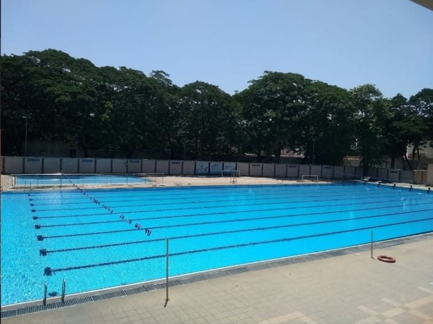
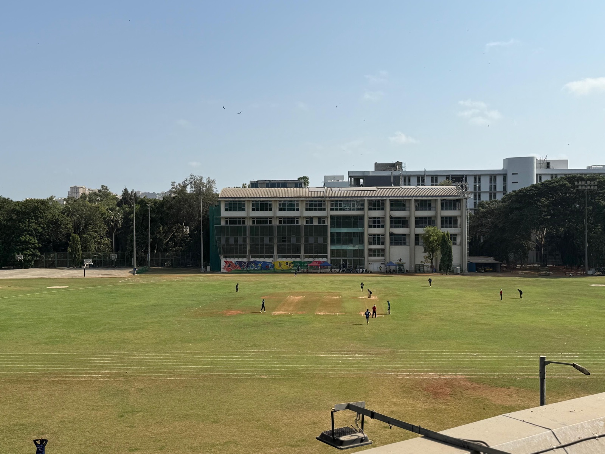

Aquatics
Find your rhythm in the water.
 IIT BombaySportsBook a court
IIT BombaySportsBook a court 
The early morning laps. The game that goes into extra time. The friends who become your team.
From your first practice to representing the Bombay BlackCats, there’s a place for you here. Discover the sports, spaces, and people that make this campus move.
Explore the possibilitiesSome of the best things
at IIT Bombay happen
outside the classroom.
For the ones on the field.
And everyone cheering them on.
14Sports to make your own
5Clubs. New possibilities.
1Shared love for the game
You don’t have to be an athlete
to begin. You just have to begin.

From above, a place to play.
Step closer and find your game.
 Cricket ground
Main football ground
Hockey ground
Basketball court
Swimming pool
Football turf
Badminton · old SAC
100m synthetic track
Cricket ground
Main football ground
Hockey ground
Basketball court
Swimming pool
Football turf
Badminton · old SAC
100m synthetic track

Photo 1 of 3
Cricket ground
The central field at the Gymkhana, with the athletics track wrapping around it. A place for practice, inter-hostel contests and a shared love of cricket.
Eight places. Your campus to explore.
All sports & facilities